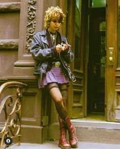
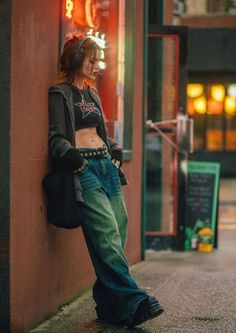
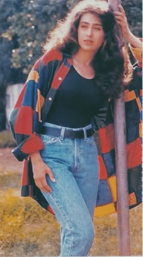

What is the fashion in the 90s ?
In the final decade of the twentieth century, fashion continued to move towards a more casual style of dressing and minimalism. While there were periods of more formal dress, the twentieth century largely saw fashion moving towards a much more minimalist and casual style and as the eighties ended, this approach became widespread. By the end of the decade, it was clear that this approach to dressing was here to stay.While the decade began with the popularity of these high fashion and larger-than-life styles of the eighties, fashion quickly moved toward less glamorous and more casual dress. The casual grunge look didn’t work with the glamour of the supermodels while Moss’ waif-like thinness and delicacy enhanced the unkempt look that was popular in the early nineties.
In the mid-nineties, styles became more feminine again. Slip dresses epitomized the minimalist look during this period.The casual grunge look didn’t work with the glamour of the supermodels while Moss’ waif-like thinness and delicacy enhanced the unkempt look that was popular in the early nineties.The “sexy schoolgirl” look as seen in movies like Clueless and later in the decade in Britney Spears’ “…Baby One More Time” music video became popular during the middle of the decade. Undersized sweaters, baby doll t-shirts and knee high socks all made up this look that was worn by young women.With the new millennium looming, women’s fashion turned to a more bohemian style with influences from the 1970s. Embroidery, mixed fabrics and Eastern influences made their way into fashion once again.With the new casual, bohemian styles came low-slung jeans and crop-tops, which would be the hallmark of the coming decade.


